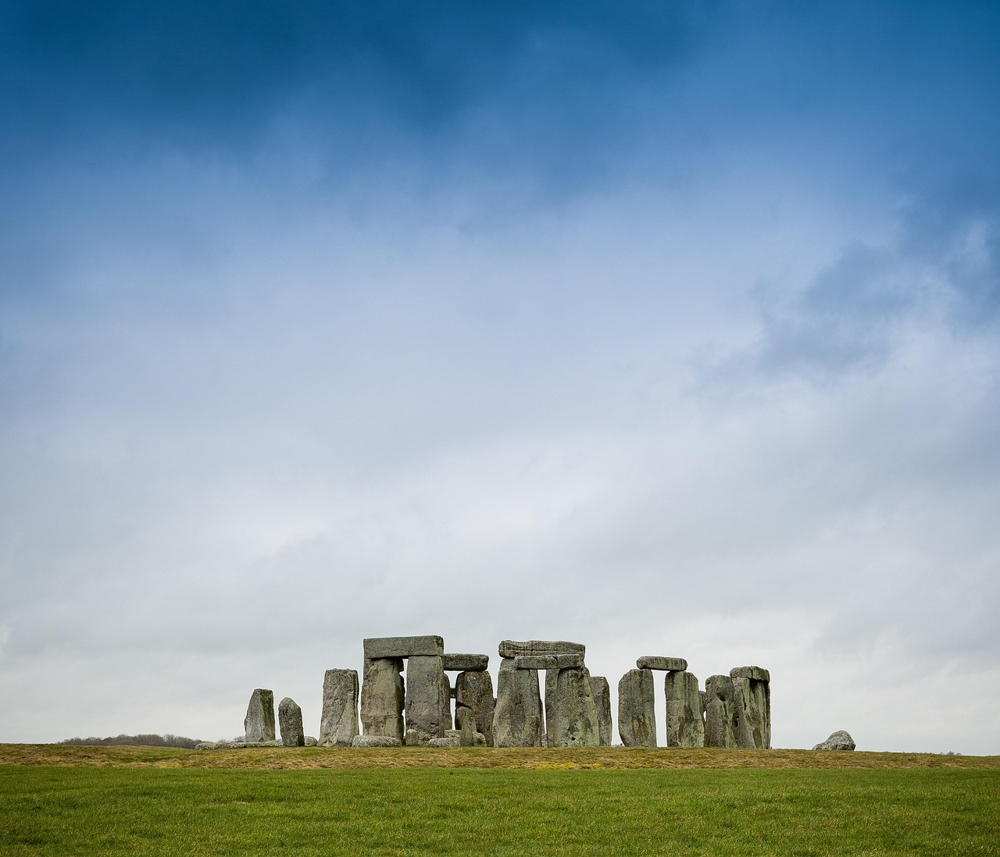

À la une • 6 min de lecture
Voyager léger : une méthode simple pour moins d'impact
Emporter l'essentiel, éviter le plastique à usage unique et choisir des hébergements responsables : nos conseils illustrés pour réduire votre empreinte sans sacrifier le confort.
21 nov 2025 • Par Leila
Itinéraires hors-piste (responsables)
Petits circuits pour découvrir des coins authentiques, conçus pour respecter les habitants et la nature.
12 oct 2025 • Par Hamza
Soutenir les projets locaux
Guide pour identifier et collaborer avec des initiatives locales (coopératives, ONG, artisans).
5 oct 2025 • Par Samira
Préparer une randonnée éthique
Checklist, équipement responsable et bonnes pratiques pour trekkeurs respectueux du milieu.
28 sep 2025 • Par Youssef
Voyage zéro déchet en pratique
Conseils pratiques pour réduire vos déchets lors d'un séjour — du sac réutilisable au savon solide.
12 sep 2025 • Par Nadia
Photographier la nature sans la déranger
Éthique photo : comment capturer la beauté tout en respectant la faune et flore locales.
3 sep 2025 • Par Karim
Hébergements responsables — comment choisir
Critères pour évaluer le sérieux environnemental et social d'un hébergement.